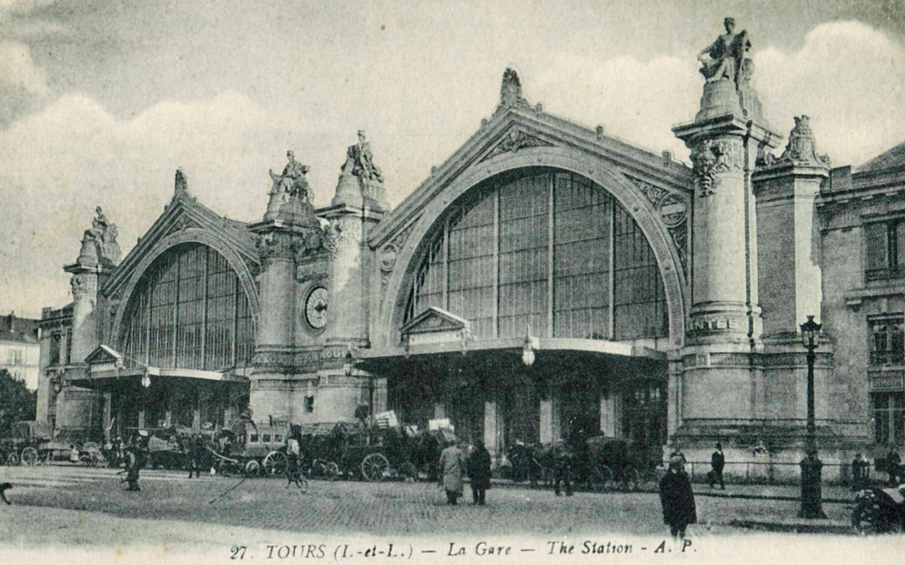
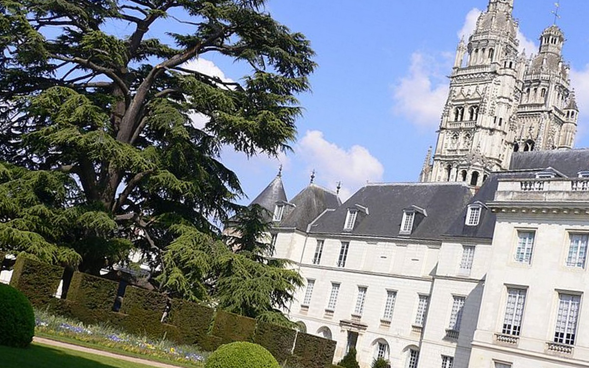

Cette page présente des parcours de visite urbaine tiré de service patrimoine labelisée Ville et Pays d'Art et d'Histoire. Laissez vous conté l'histoire de vos monuments préféré. Vous pouvez télécharger les documents d'ou j'ai tiré les textes et une carte avec les différent points évoquer. Plus tard quand j'aurai le temp, je vous proposerai mais propre parcours. Bonne lécture et que l'amour du patrimoine vous porte
La fondation du château entérine la création de la ville de Laval. Entre 1020 et 1030, Guy de Dénéré établit son castrum sur un éperon rocheux dominant la Mayenne, à proximité d'un gué d'origine antique. Cette première bâtisse de terre et de bois, doté d'un système défensif à trois mottes, est bientôt supplantée par une forteresse de pierre, dont la pièce maîtresse est le donjon cylindrique élevé vers 1220. Cette tour à vocation militaire, haute de 34 mètres, conserve des hourds considérés comme les plus anciens de France. À la Renaissance, sous l'impulsion de seigneurs devenus gouverneurs de Bretagne, la façade sur cour est percée de grandes fenêtres ornées d'un riche décor de tuffeau, dont les motifs puisent leur inspiration dans l'Antiquité. S'y côtoient des êtres mythologiques (sirènes, centaures) ainsi que des références explicites à l'héritage gréco-romain (bustes drapés, armures à pectoraux). Devenue prison à la Révolution, l'ancienne demeure des comtes de Laval accueille, depuis 1967, un musée d'art naïf et des arts singuliers rendant hommage à l'héritage pictural légué par le Douanier Rousseau.
Quittant la cour du château, on parvient sur « le grand pavé » qui constituait le cœur de la ville d'Ancien Régime. Le comte Guy XVII de Laval y fait bâtir une somptueuse galerie renaissance en 1542, en s'inspirant très largement du modèle royal de Fontainebleau. À la Révolution, le bâtiment devient palais de justice. La guillotine se dresse alors devant la maison de la Bazoche ou de la Béraudière (n°10) dont la façade s'inspirant des pavillons de la place des Vosges à Paris, avec ses fenêtres à bossage et son haut toit d'ardoises, porte encore le millésime attestant de sa construction en 1615. Elle est contemporaine du pavillon d'entrée du château édifié dans le prolongement de la maison Pierre Briand qui présente une intéressante mise en œuvre mêlant structure à pan de bois et briques. De la place, on aperçoit également la silhouette imposante de la cathédrale de la Trinité. Ce monument construit à partir de 1070 présente une synthèse intéressante des différents styles architecturaux religieux de l'époque romane au 19e siècle. En 1855, l'édifice, devenu cathédrale, accueille Mgr Wicart, premier évêque de la Mayenne.

Après avoir laissé sur la gauche la maison de la Bazoche, on aboutit devant l'imposante façade du palais de justice. Construit en 2006 sur les plans de l'architecte Roubert, l’édifice présente un porche monumental ouvert sur un atrium desservant salles d'audience et espaces à caractère administratif. La sobriété de ses lignes architecturales permettent d'inscrire cette construction contemporaine dans son environnement historique et contribue à doter le quartier d'un nouveau pôle patrimonial fort, à l'image des maisons à pan de bois (n°12, 14 et 16) datées de la fin du Moyen-âge ou de l'atelier public de sculpture installé dans un bâtiment de style néo-classique ayant fait office, jusqu'en 1976, de bibliothèque municipale. Au pignon est de ce dernier édifice, subsistent les vestiges en élévation de la première travée de la nef d'un édifice religieux, dont on peut également percevoir un chapiteau sculpté matérialisant le départ du couvrement en ogives. Il s'agit de l'église collégiale Saint-Tugal, construite à partir de 1444 sur les vœux d'Anne, première comtesse de Laval, qui en fait la nécropole familiale. Abandonné à la Révolution, le bâtiment sert d'abord d'écuries avant d'être progressivement démantelé et de voir également son cloître détruit.
Après avoir laissé à gauche une fontaine publique du 17e siècle dotée d'une élégante coquille en marbre surmontée d'un fronton triangulaire, on emprunte la rue des Béliers puis la rue Renaise. Cette artère présente encore un parcellaire original, de type laniéré, hérité du Moyenâge. Les archéologues y voient d'ailleurs les traces du premier bourg de Laval, fondé au 11e siècle aux abords du château. Néanmoins, les façades alignées sur rue marquées d'éléments ornementaux caractéristiques (balcons de fer forgé, heurtoirs, portes millésimées) renvoient aux premières transformations opérées dans l'espace urbain au 18e siècle.
En longeant le chevet plat de la cathédrale, dont le style gothique flamboyant matérialise les aménagements du monument à la fin du Moyenâge, il est possible de rejoindre la place Hardy de Lévaré. Une statue de Jeanne d'Arc, élevée en 1910, rappelle que Guy XIV de Laval et son frère, André de Lohéac, futur maréchal de France, ont combattu au côté de la « pucelle ». En lieu et place du square qu'y s'y trouve aujourd'hui, il faut imaginer jusqu'au milieu du 18e siècle la présence d'une puissante fortification, au plan en demi-lune, faisant office de boulevard d'artillerie protégeant les abords immédiats de la porte Beucheresse. Ouvrage défensif constitué de deux tours semi-circulaires flanquant un étroit passage voûté, ses flancs sont percés d'archères et ses murs couronnés de mâchicoulis. Devenue privative au 19e siècle, cette construction a vu naître, en 1844, celui qui passera à la postérité sous le nom du Douanier Rousseau, père de l'Art Naïf.
Derrière une grille, la promenade Anne d’Alègre, qui renvoie au souvenir d’une dame de Laval dont le corps a été retrouvé dans la chapelle du château en 1987, se développe le long des anciennes douves du mur d’enceinte sud protégeant la ville depuis le 13e siècle. Au sortir de cet espace, la rue des Éperons conduit à droite vers une vaste place portant le nom de celui qui l’a fait aménagée, Jean-François de Hercé, d’abord maire de Laval (1814-1829) puis évêque de Nantes (1838-1848).Répondant au nom de Montmartin, ce site péri-urbain connaît une première occupation à partir de 1621 avec l’installation des scolastiques de Poitiers qui y fondent un couvent de Bénédictines. Détruit à la Révolution, cet établissement monastique laisse la place à un espace urbain marqué par des hôtels particuliers de style néo-classique comme l’hôtel de Pignerolle, à l’élégante façade marquée de bustes à l’antique, situé au n°11, ainsi qu’à de grandes réalisations publiques. La première, l’ancien musée des Beaux-arts (1899) prend la forme d’un bâtiment de style néo-grec, conçu sur les plans de l’architecte Léopold Ridel. La seconde, la salle polyvalente (1976), reprend l’emplacement du palais de l’industrie, chef d’œuvre de style Baltard finalement détruit, et arbore un parti architectural plus contemporain, inspiré du palais des sports de Grenoble.

Ancienne propriété privée acquise par la Ville en 1885, le jardin de la Perrine offre, de sa terrasse, un intéressant panorama sur la ville et la rivière. Près de la roseraie, la présence d’un voilier rappelle le souvenir d’Alain Gerbault, célèbre navigateur solitaire ayant réalisé le tour du monde entre 1923 et 1929. Plus haut, un petit square sert d’écrin à la tombe du Douanier Rousseau, dont les cendres furent ramenées à Laval en 1947. À proximité, le parc botanique, fort de ses 4,5 hectares, permet aux visiteurs de découvrir nombre d’essences exotiques telles que séquoias, cèdres, et gingko. Deux établissements à vocation culturelle (musée école et espace Gerbault) viennent compléter les équipements de cet espace de promenade prisé des Lavallois.

Une porte ménagée sur la place des 4 docteurs Bucquet permet de regagner le centre historique par la rue des Chevaux. À proximité de la cathédrale, la rue de la Trinité présente l’un des exemples les plus remarquables de construction à pan de bois du tout début du 16e siècle. L’hôtel de Clermont, siège urbain de l’abbaye cistercienne éponyme, offre une façade agrémentée de sculptures répondant à un programme cohérent d’iconographie religieuse. Aussi peut-on distinguer, de gauche à droite, les figures de Saint Benoît et Saint Bernard côtoyant celle de la Vierge à l’Enfant. Du côté de la cathédrale, Saint-Christophe comme SainteBarbe complètent ce décor symbolique, assurant à la fois la protection des voyageurs et celle de l’îlot urbain contre les risques d’incendie.
En redescendant dans le prolongement de la rue de la Trinité se développe la Grande Rue, dont le tracé conserve le souvenir d’une ancienne voie antique conduisant vers l’Armorique. Au croisement avec la rue des Orfèvres, la façade d’une demeure en tuffeau déploie un riche décor sculpté, attestant du rang social de son propriétaire. Construite en 1554 pour le marchand Jacques Marest, elle porte le nom de maison du Grand Veneur et témoigne de l’essor du commerce de la toile de lin depuis l’achèvement de la canalisation de la Mayenne entre Angers et Laval, sous le règne de François 1er. Aujourd’hui, cet élégant bâtiment abrite les locaux du Service Patrimoine de la Ville de Laval. Plus bas, autour d’une fontaine, se développe un front de bâti à pan de bois, aux encorbellements parfois prononcés, attestant de la dynamique immobilière qu’a connu la ville après la fin de la guerre de Cent Ans. Sur la gauche, au n°28, la maison du Pou Volant, dont le patronyme renvoie au rôle d’ancien hospice pour personnes nécessiteuses, a fait l’objet d’une datation scientifique par dendrochronologie. Les bois qui composent sa structure ont été abattus en 1423, ce qui en fait une des maisons les plus anciennes de la ville.
Pourvu à l’origine de cinq arches, cet ouvrage, probablement daté de la fin du 12e siècle, reste longtemps encombré par des maisons, un moulin et un hôpital. Une porte fortifiée, le châtelet Saint-Julien, qui en marquait l’entrée rive gauche est détruite en 1779. L’aménagement des quais sous le Second Empire provoque une profonde modification des abords de la rivière, ainsi que la construction du nouvel hôpital Saint-Julien, dont le centre est marqué par la présence d’une chapelle de style romano-byzantin couronné d’une imposante coupole (1899). À proximité, sur le quai Paul Boudet, le bateau-lavoir SaintJulien, bâtiment classé au titre des monuments historiques en 1993 et ayant fait l’objet d’une récente restauration, permet au visiteur d’appréhender l’activité buandière sur les rives de la Mayenne telle qu’elle existait encore avant 1970. Au loin, la flèche de la basilique d’Avesnières rappelle que cet édifice religieux fondé au 11e siècle présentant un remarquable chevet roman a été, pendant longtemps, le centre d’un bourg finalement rattaché à Laval en 1863.
Situé face à la gare de Tours, le palais des congrès est conçu par Jean Nouvel, architecte de renommée internationale. La construction de l’édifice s’inscrit dans un projet global de réaménagement du secteur de la gare. Les salles suspendues en surplomb du boulevard sont construites selon le principe de porteà-faux, inventé par les ingénieurs anglais au XIXe siècle. Le parti architectural, résolument moderne, repose sur un jeu d’ombres, de reflets et de transparence sur l’environnement urbain. Depuis 2016, il bénéficie du label «Architecture contemporaine remarquable », décerné par le ministère de la Culture.
L’Embarcadère, ancienne gare de la ville, était situé sur l’actuelle Place du GénéralLeclerc jusqu’à la construction de la nouvelle gare de Tours. Édifiée entre 1896 et 1898, la gare est composée de deux halles en acier recouvertes de verre conçues par les ingénieurs de la Compagnie de chemin de fer de Paris-Orléans. Seuls la façade et ses ornements ont été réalisés par Victor Laloux. Très courantes dans l’architecture de Laloux, quatre allégories sont mises en avant : Limoges, Bordeaux, Toulouse et Nantes sont figurées par des femmes juchées sur des colonnes monumentales. À l’intérieur, de grands tableaux de céramique illustrent les plus séduisantes destinations desservies.
Ce théâtre à l’italienne est bâti par Léon Rohard entre 1869 et 1872, date de son inauguration. L’entrée monumentale est surmontée d’un fronton orné d’un groupe sculpté par Frédéric-Charles Combarieu et représentant les allégories de la Comédie, de l’Inspiration poétique et de la Tragédie. Cette façade est épargnée lors de l’incendie qui détruit presque entièrement le théâtre en 1883. L’édifice est reconstruit par Jean-Marie Hardion de 1885 à 1887, puis Stanislas Loison jusqu’à la fin du chantier. L’escalier monumental apparaît comme la pièce maîtresse du fastueux décor néoclassique élaboré par Hardion. Les peintures décoratives sont confiées à Georges Clairin, peintre estimé de Charles Garnier, qui réalise de somptueuses compositions à la gloire de la Touraine.
L’ancien Palais de l’Archevêché est construit contre l’enceinte gallo-romaine dont subsistent aujourd’hui la tour à l’ouest et des fondations visibles dans les « souterrains » du palais. Le bâtiment actuel, qui succède à des édifices antérieurs, est essentiellement l’œuvre de deux hommes : Monseigneur Bertrand d’Eschaux ordonne la construction du premier bâtiment au XVIIe siècle et Monseigneur Rosset de Fleury agrandit l’ensemble au XVIIIe siècle par l’adjonction d’une aile. Le lieu dispose d’un vaste jardin agrémenté de mosaïculture et d’un remarquable cèdre du Liban. En 1910, l’ancien palais des archevêques devient Musée des Beaux-Arts. On y découvre des œuvres majeures de la statuaire antique (Ier-IIIe siècles), de l’art primitif italien ou encore du néo-classicisme. Les œuvres d’artistes de renom y figurent : Mantegna, Rubens, Rembrandt, Champaigne, Delacroix, Monet ou encore Degas.
Placé sous le vocable de saint Gatien, premier évêque de Tours, l’édifice actuel est le résultat de plus de trois siècles de construction. Le chœur constitue l’un des exemples les plus aboutis de l’architecture du XIIIe siècle et ses vitraux historiés sont absolument exceptionnels. Les deux tours, dont la silhouette est indissociable de la ville, allient architecture gothique et sommets de la Première Renaissance : leur couverture par une coupole est, au moment de sa construction, sans précédent. Terminé en 1507 et placé ici en 1810, le tombeau des enfants de Charles VIII et Anne de Bretagne apparaît comme un chef d’œuvre de cette transition entre Moyen Âge et Renaissance.
Place de la Cathédrale XV-XVIe siècles Réalisé entre 1442 et 1524, le cloître de la Psalette associe architecture gothique, avec ses contreforts et voûtes d’ogives, et Renaissance par ses portes aux motifs italianisants, ses plafonds à caissons et son escalier en vis rappelant celui de l’aile François Ier à Blois. L’ensemble du décor a été réalisé avec un grand soin et atteste de la qualité des réalisations tourangelles du début de la Renaissance française
Impulsée par le roi Philippe III, la construction du château de Tours avait pour but d’asseoir la présence royale en Touraine. L’édifice du XIIIe siècle, bâti contre le rempart galloromain, adopte donc une vocation militaire, comme en témoignent les deux tours de défense médiévales conservées. Placé face à la Loire, le logis des Gouverneurs est d’une architecture gothique typique du XVe siècle. Au XIXe siècle, l’établissement de la caserne Meusnier engendre une restructuration du site dont résulte la construction du logis de Mars entre les tours médiévales. Le château est désormais un lieu d’exposition bénéficiant d’un partenariat prestigieux avec le Musée du Jeu de Paume à Pa
La place Foire-le-Roi se situe entre les anciens terrains de l’abbaye Saint-Julien et le couvent des Jacobins, le long de l’actuelle rue Colbert. En 1545 le roi François Ier accorde à la ville la création d’une nouvelle foire franche, qui donne son nom à la place. Dès le Moyen Âge, cette place marchande, la plus animée de la cité, devient le théâtre des exécutions publiques. L’hôtel Babou de la Bourdaisière se dresse sur la place et se distingue par son décor Renaissance du début du XVIe siècle
La ruelle couverte la plus étroite de la ville relie la rue Colbert à la place Foire-le-Roi. Résultant du rapprochement de deux maisons des XVe et XVIe siècles, le passage du Cœur navré permettait aux condamnés de se rendre sur la place où leur peine les attendait. Selon la tradition, son nom viendrait d’une enseigne de cette rue portant un cœur transpercé
Parallèle à la Loire, la rue Colbert, ancienne Grand-Rue, était jusqu’au XVIIIe siècle le plus important axe de circulation de la ville. Urbanisée à la fin du Moyen Âge, elle conserve de nombreuses maisons en pans de bois remarquables qui se distinguent par des teintes ocre-rouge typiques des XVIIe et XVIIIe siècles en Touraine (n°25, n°27). Certaines façades ont été reconstruites en pierre au XVIIIe et XIXe siècle